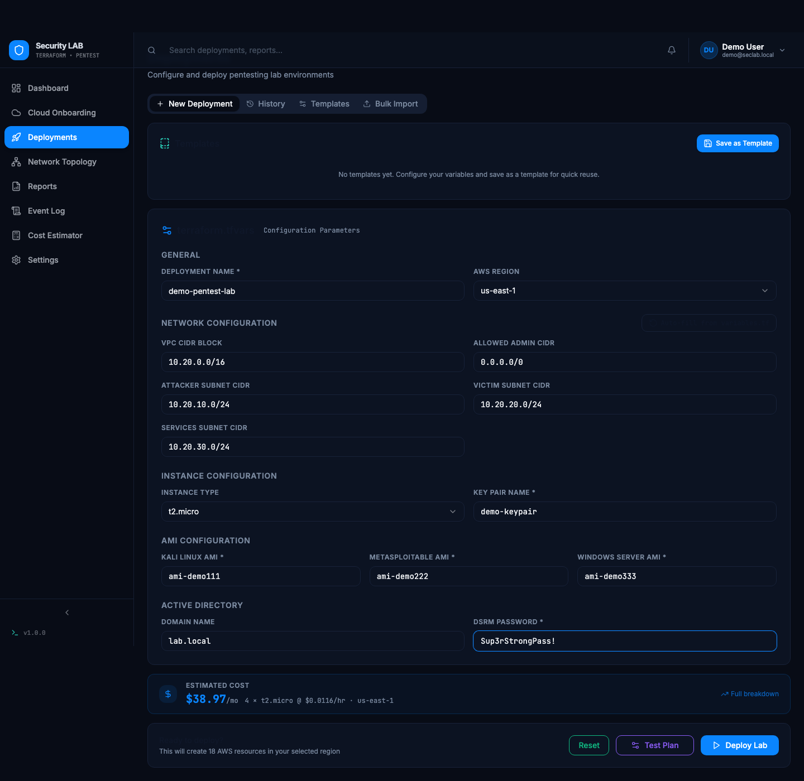
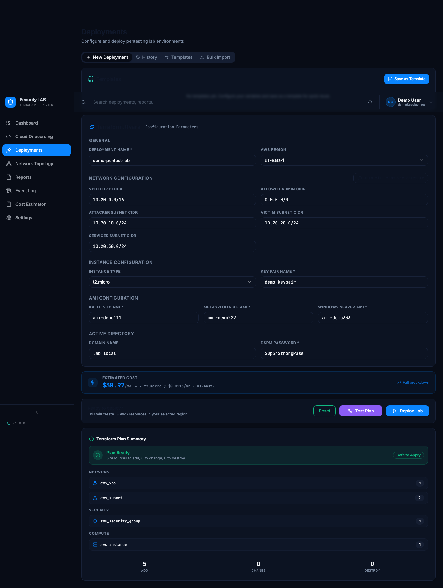
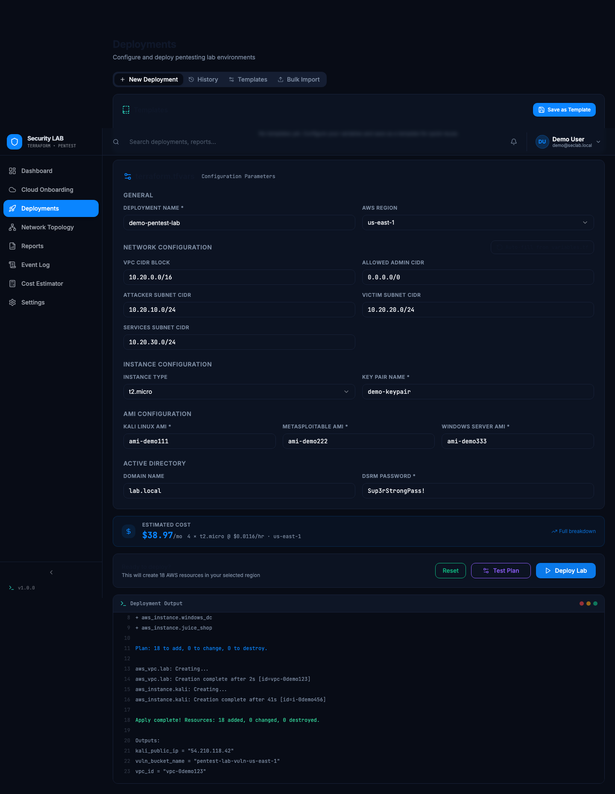
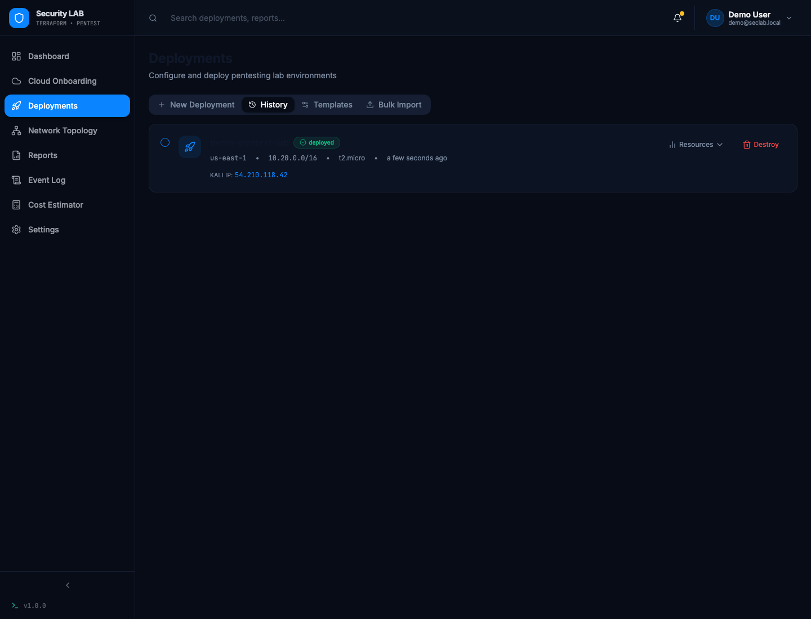

SecLab Orchestrator — Architecture & Demo Preview
How the Terraform pentest lab, the secure-orbit-deploy dashboard, and Terraform Cloud fit together — illustrated with real screenshots from the rewired Deployments page.
Pipeline
React dashboard
secure-orbit-deploy — Deployments page. Form values mirror variables.tf 1:1. Calls base44.functions.invoke(...).
Base44 backend functions
createWorkspace / planOnly / getRunStatus / getOutputs / destroyWorkspace. Hold the TFC token + AWS creds — never sent to the browser.
Terraform Cloud
One workspace per deployment, configured with this repo's main.tf/variables.tf/outputs.tf. Runs real plan/apply/destroy.
AWS lab
VPC, Kali, Metasploitable, Windows DC, Juice Shop, the intentionally-vulnerable S3 bucket — the actual pentest lab.
npm run dev), with the Base44 backend and Terraform Cloud responses mocked at the network layer — so every state shown (plan counts, log text, deployed status, Kali IP) was produced by the real pollRunStatus / base44.functions.invoke logic in Deployments.jsx, not hand-written demo text.
1. Fill in the lab variables
The New Deployment form (VariablesForm.jsx) maps directly onto variables.tf — region, VPC/subnet CIDRs, instance type, AMI IDs, AD domain/DSRM password.

2. Test Plan — a real, speculative Terraform Cloud run
- Click Test Plan → frontend calls
planOnly, which creates (or reuses) a TFC workspace and uploads a speculative configuration version — it can never apply, so no AWS resources are touched. - Frontend polls
getRunStatusevery 3s until the run reaches a terminal state and streams the real plan log. PlanSummary.jsxparses the real"Plan: N to add, M to change, K to destroy"line and the"# aws_xxx.yyy will be created"entries — counts are computed, not hardcoded.

3. Deploy Lab — real apply, streamed log
- Deploy Lab creates the
Deploymententity, then callscreateWorkspace(workspace + variables + config upload + run,auto-apply: true). - The same
pollRunStatusloop streams real plan+apply log text into the terminal panel (DeployLog.jsx) as the run progresses throughplanning → applying → applied. - On
applied,getOutputsreads the workspace's actual Terraform outputs (kali_public_ip,vpc_id,vuln_bucket_name) and writes them onto the deployment record.

4. History — real status, real outputs
The History tab reflects the Deployment entity as updated by the real run lifecycle — status badge, region/CIDR/instance type, and the Kali public IP pulled from getOutputs.

What's still manual
This preview mocks the Base44 functions and Terraform Cloud API so the UI flow could be demonstrated without a live TFC account. For a real deployment, see secure-orbit-deploy/tfc-functions/README.md for the one-time setup: creating a Terraform Cloud org/token, deciding on AWS credentials, and pasting the five function files into the Base44 editor.